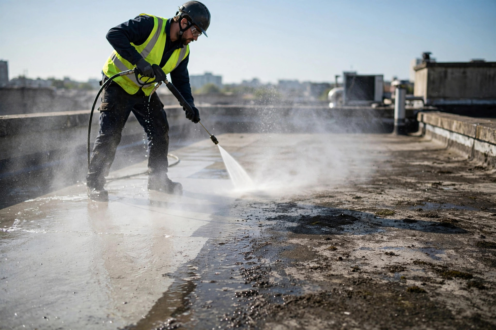
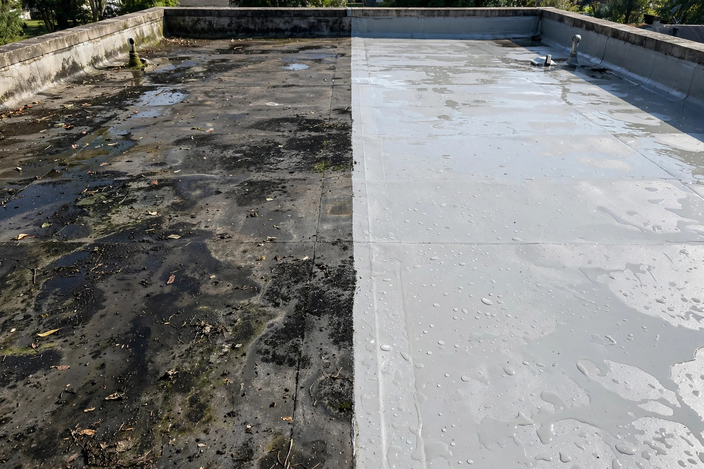
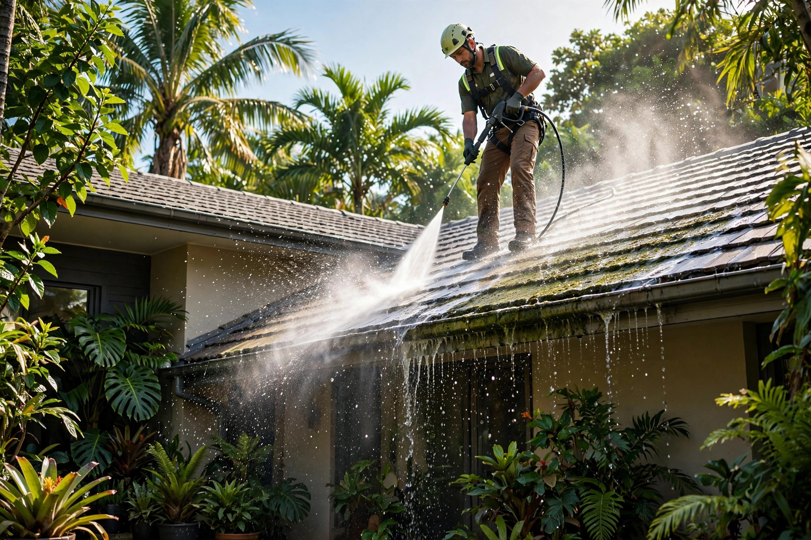
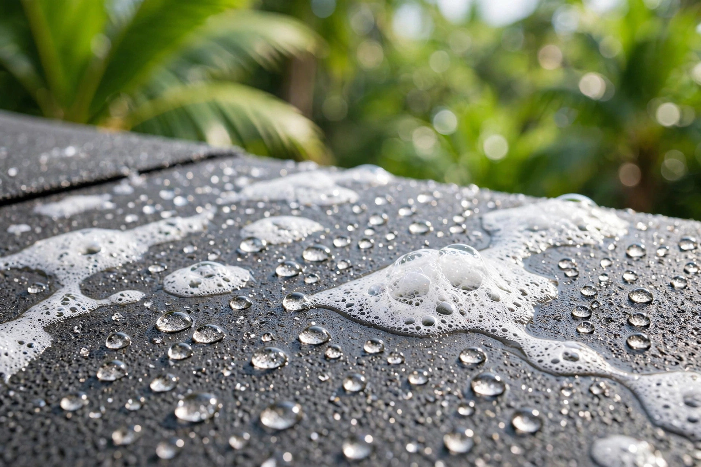

Limpieza y sellado de techos en Arecibo. Lavado a presión con agua caliente y baking soda: efectivo y eco-amigable.
Lavado a presión con agua caliente y baking soda. Eco-amigable.




Agua caliente a presión que arranca moho, hongo y suciedad.
Limpieza efectiva cuidando tus plantas, mascotas y el ambiente.
Después de limpiar, sellamos para proteger tu techo.
Devolvemos el color y la vida a tu techo.
WhatsApp al 787-463-1196.
Vemos el estado de tu techo.
Lavado a presión con agua caliente y baking soda.
Protección final eco-amigable.
Un método de limpieza eco-amigable que combina agua caliente a presión con baking soda para remover moho y suciedad sin químicos agresivos.
Es un método eco-amigable, pensado para cuidar tu hogar y el ambiente.
Sí: después de la limpieza profunda podemos aplicar el sellado para protegerlo.
Depende del tamaño y la suciedad acumulada; la mayoría de las residencias se trabaja en un día.
Arecibo y el área norte de Puerto Rico. Escríbenos y confirmamos tu pueblo.
Esta página la creó ManuPro. Escríbenos hoy mismo y cotiza la website profesional de tu negocio.
Cotizar por WhatsApp